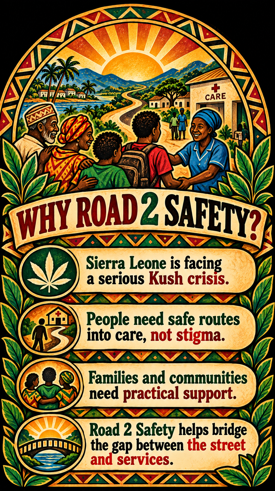

Public or independently supported evidence suitable for careful external use.

NAVIGATOR · SIERRA LEONE
What do you
need today?
A community-rooted road to care, recovery and opportunity.
No personal details needed to explore.
Choose your path.
START HEREI need helpSafety, support and the next step.
›
I am in recoveryFollow-up, skills and a road forward.
›
I support someoneGuidance for family and community.
›
I can contributeShare expertise. Build capacity.
›
Evidence & project libraryUnderstand the sources. Explore the work.
THE ROAD BACK
CRISIS→CARE→RECOVERY→SKILLS→REINTEGRATION
In formation as a UK Community Interest Company. Proposed registered name: Road 2 Safety International CIC. Not yet incorporated.
PROGRAMME FAMILY
Connected routes.
Each lane has a different job and different safeguards.
01Road 2 Safety CoreCare navigation · recovery · reintegration
Kush Crisis Navigator, referral follow-through, family/community support and longer-term recovery pathways.
02Plastic 2 PurposeCircular economy · skills · employment
Waste → Skills → Production → Employment → Recovery → Reintegration. A proposed circular-economy programme intended to create more stable routes into skills and livelihood. Any relationship with Nzambi Matee / Gjenge Makers remains a proposed partnership to approach, not an existing partnership.
03Science & Recovery R&DToxicology · cannabinoids · Iboga research
Research questions are kept separate from treatment claims. Any human research requires qualified institutions, ethics approval, clinical governance and relevant legal/regulatory permissions.
04Top-Down Systems WorkSupply · money · governance · accountability
Map the crisis as one connected system: public-health harm at street level, organised supply above it, financial profit behind it and institutional accountability around it.
THE PRINCIPLE
Do not build the response around punishing the most vulnerable point in the chain.
View the full Road 2 Safety model artwork

EVIDENCE LIBRARY
Know what kind of claim you are reading.
Road 2 Safety separates evidence strength and sensitivity rather than flattening everything into one narrative.
Identifiable Sierra Leonean or institutional material that can be cited with its source and limits.
First-hand professional information that may be important but still requires corroboration.
A scientific or policy question being tested rather than an established answer.
Material requiring controlled handling rather than automatic public publication.
Project documents
DOC
Foundational Framework v2Mission, operating model and governance boundaries
↓
DOCPlastic 2 Purpose Founding FrameworkEconomic opportunity and reintegration pathway
↓
DOCOne-page Organisational ProfileQuick institutional overview
↓
PPTInstitutional Pitch DeckGovernment, partner and funder presentation
↓
ABOUT ROAD 2 SAFETY
Build capacity, not dependency.
Road 2 Safety International is being formed as the UK international coordination, fundraising, partnership and project-incubation body alongside a locally governed Sierra Leone operational structure.

People are people before they are “users”, “addicts” or statistics. Care and informed choice come before ideology.
Verified evidence, documented sources, advisory information and unresolved claims should not be presented as though they carry the same certainty.
Frontline recovery money should not silently subsidise specialist research or unrelated advocacy.
No experimental medicine is promoted as a cure before appropriate evidence, approvals and clinical safeguards exist.
GENERAL & PARTNERSHIP ENQUIRIES
Road2SafetyCIC@gmail.comPlease do not send medical records or confidential case histories.Prototype privacy position
← View public holding website
This build stores only local display preferences on your own device. It does not contain an account system, analytics, tracking or a beneficiary case database.